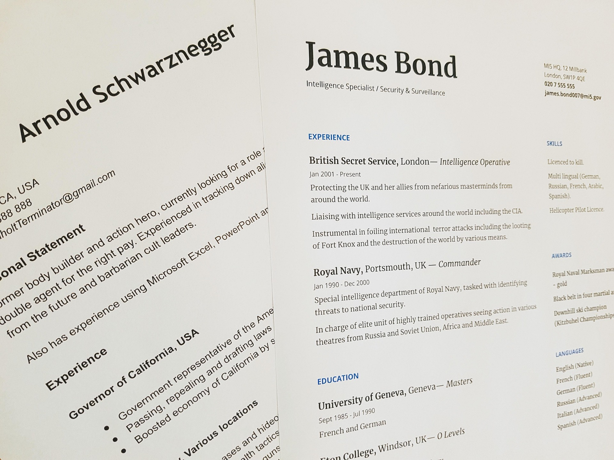

Lebenslauf

Dieser Bereich gibt Ihnen einen strukturierten Überblick über meinen bisherigen Bildungs- und Werdegang. Als aktueller Schüler der IMS an der Kantonalschule Baden erwerbe ich fundierte Kenntnisse in Bereichen wie Applikationsentwicklung, Datenbanken und Systemtechnik. Neben der rein schulischen Ausbildung lege ich großen Wert darauf, mein Wissen durch praktische Übungen und eigene Programmierarbeiten zu vertiefen. Zu meinen Kernkompetenzen gehören erste fundierte Erfahrungen in Python und C# sowie im strukturierten Projektmanagement. Mein Fokus liegt nun darauf, die Ausbildung erfolgreich abzuschließen und im anschließenden Praxisjahr mein Können in einem echten Betrieb unter Beweis zu stellen. Details zu meinen Modulen und Notenschwerpunkten finden Sie in den folgenden Abschnitten.